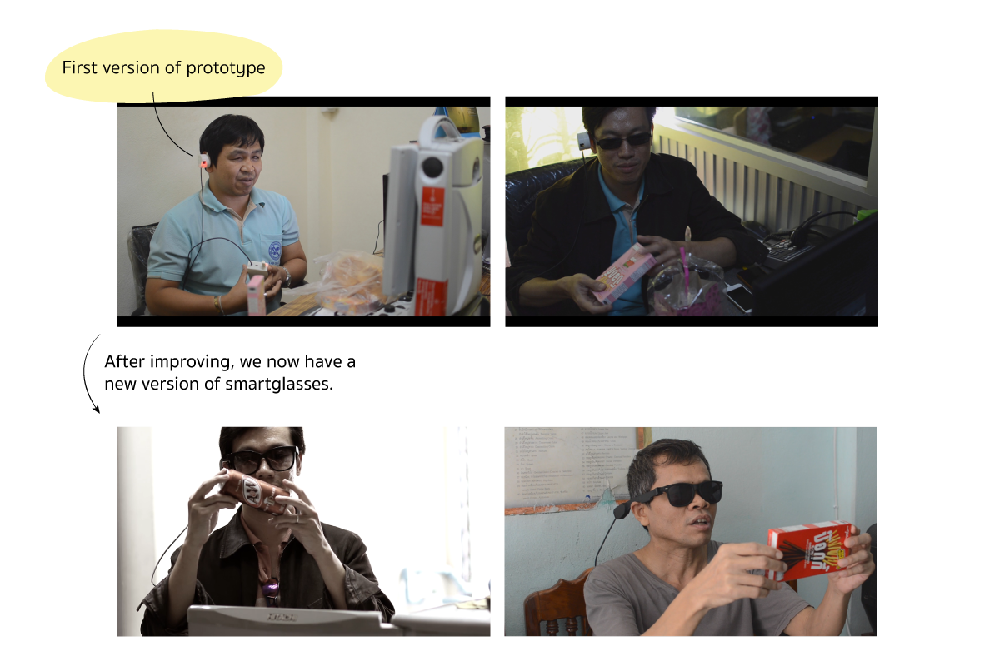
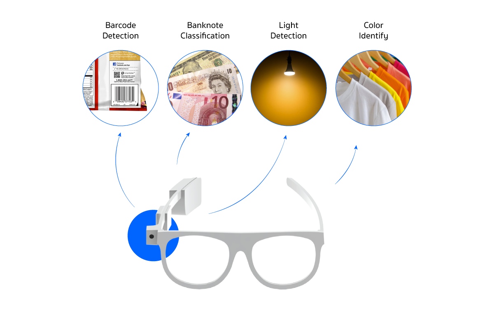

Role:
UX Designer
Timeline:
2015
Designed to empower, Visionear smart glasses enhance everyday independence for the visually impaired—making it easier to navigate, recognize colors, read labels, and live life with greater confidence.
About this case study
In creating Visionear, we began with in-depth user research to uncover the unique needs and challenges visually impaired individuals face in daily life. Using these insights, we developed a prototype, testing it with blind users to gather feedback and refine the design for maximum impact and usability.
What I've done
User Research
- In collaboration with the Association of the Blind in Thailand, I conducted interviews with visually impaired individuals to understand their daily needs.
- I observed daily routines to comprehend the difficulties encountered in daily life.
Competitor Analysis
- We scrutinized the strengths and weaknesses of competitors to pinpoint distinctive value prospects for Visionear.
- We examined target groups to refine our own product positioning.
Prototype design and development
- I developed a 3D model for the Visionear smart glasses, meticulously incorporating circuit boards into the glasses to ensure a sleek and functional design.
- Finishing the prototype.
Challenge
The most difficult aspect of creating eyeglasses to assist the blind is that we are not blind. We can try to close our eyes and live for a day to better understand them. But it's difficult to comprehend because we've never lived like them. We'd never been in the dark for as long as they had, so we had to spend a lot of time talking to them. Instead of treating them as subjects, we may need to be friends with them and make them feel comfortable enough to tell about their life.
User Interview
Solution & Features
We intend to concentrate on increasing self-reliance in everyday life after doing study. However, it does not directly address aspects of life safety, despite being a very helpful feature. It only had four functionalities due to limits in the development and implementation of the glasses.

Lesson Learn
We start by imagining what the user wants; for example, we suppose the user wants facial recognition or something similar. However, after speaking with and getting to know our users. They discovered that they could recognize their acquaintances by their walking footfall. It teaches us that knowing the real users keeps us from doing things that the user does not desire. This also clarifies the product's direction.